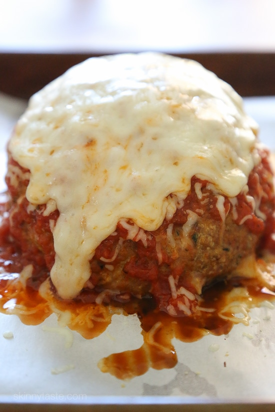

ODIN RECIPES

Stress Balls
Ingredients
- Ground mix of expectations, mid-life crisis, peer pressure, and financial instability.
- Salt and Pepper
- Powdered form of garlic and onion because the fresh ones just ain't cutting it.
- Eggs. Yes, we still need eggs here so save some money.
- Dried italian seasoning from your grandma's cupboard
- All-purpose flour
- Parmesan cheese. You can use the ones that come in jars if you're broke.
Steps
- Preheat oven to 180 degree Celsius.
- Mix all the listed ingredients. If you're looking for the measurements, we ain't have that here. ASK YOUR ANCESTORS!
- Portion out the mixture into giant balls of your liking. Line it up in a baking pan.
- Stick that in the oven and broil for 2 minutes. Turn the meatballs then broil for another 2 minutes.
- Add sauce of choice. I like spaghetti sauce. Melt some cheese on top then serve.
- Fill yourself up with this delicious balls just like everyone else in this miserable world.